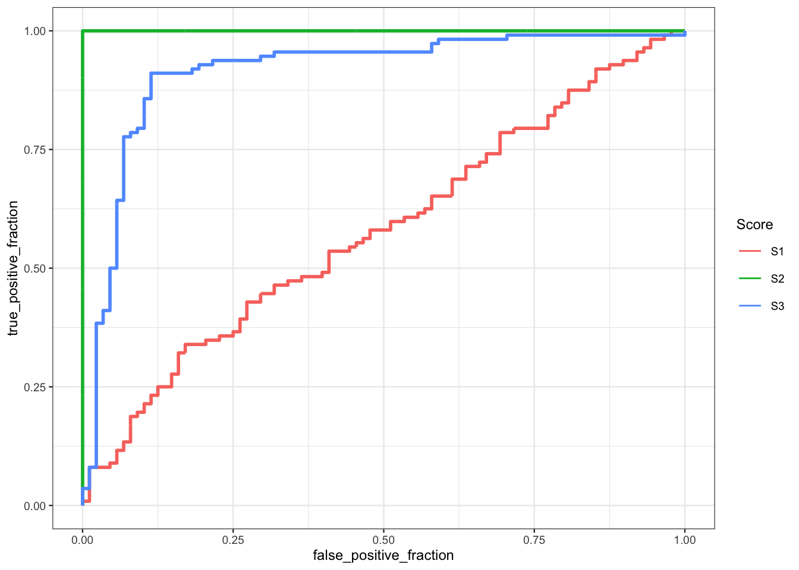

1 Calcul de risques avec R
L’apprentissage supervisé consiste à expliquer ou prédire une sortie \(y\in\mathcal Y\) par des entrées \(x\in\mathcal X\) (le plus souvent \(\mathcal X=\mathbb R^p\)). Cela revient à trouver un algorithme ou machine représenté par une fonction \[f:\mathcal X\to\mathcal Y\] qui à une nouvelle observation \(x\) associe la prévision \(f(x)\). Bien entendu le problème consiste à chercher le meilleur algorithme pour le cas d’intérêt. Cette notion nécessite de meilleur algorithme la définition de critères que l’on va chercher à optimiser. Les critères sont le plus souvent définis à partir du fonction de perte \[\begin{align*} \ell:\mathcal Y \times\mathcal Y & \mapsto \mathbb R^+ \\ (y,y^\prime) & \to\ell(y,y^\prime) \end{align*}\] où \(\ell(y,y^\prime)\) représentera l’erreur (ou la perte) pour la prévision \(y^\prime\) par rapport à l’observation \(y\). Si on représente le phénomène d’intérêt par un couple aléatoire \((X,Y)\) à valeurs dans \(\mathcal X\times\mathcal Y\), on mesurera la performance d’un algorithme \(f\) par son risque \[\mathcal R(f)=\mathbf E[\ell(Y,f(X))].\] Trouver le meilleur algorithme revient alors à trouver \(f\) qui minimise \(\mathcal R(f)\). Bien entendu, ce cadre possède une utilité limitée en pratique puisqu’on ne connaît jamais la loi de \((X,Y)\), on ne pourra donc jamais calculer le vrai risque d’un algorithme \(f\). Tout le problème va donc être de trouver l’algorithme qui a le plus petit risque à partir de \(n\) observations \((x_1,y_1),\dots,(x_n,y_n)\).
Nous verrons dans les chapitres suivants plusieurs façons de construire des algorithmes mais, dans tous les cas, un algorithme est représenté par une fonction \[f_n:\mathcal X\times(\mathcal X\times\mathcal Y)^n\to\mathcal Y\] qui, pour une nouvelle donnée \(x\), renverra la prévision \(f_n(x)\) calculée à partir de l’échantillon qui vit dans \((\mathcal X\times\mathcal Y)^n\). Dès lors la question qui se pose est de calculer (ou plutôt d’estimer) le risque (inconnu) \(\mathcal R(f_n)\) d’un algorithme \(f_n\). Les techniques classiques reposent sur des algorithmes de type validation croisée. Nous les mettons en œuvre dans cette partie pour un algorithme simple : les \(k\) plus proches voisins. On commencera par programmer ces techniques “à la main” puis on utilisera le package tidymodels qui permet de calculer des risques pour quasiment tous les algorithmes que l’on retrouver en apprentissage supervisé.
Dans cette partie nous considérerons les données suivantes :
gen_class_bin2D <- function(n=100,graine=1234,bayes=0.1){
set.seed(graine)
grille <- 0.1
X1 <- runif(n)
X2 <- runif(n)
Y <- rep(0,n)
cond0 <- (X1>0.2 & X2>=0.8) | (X1>0.6 & X2<0.4) | (X1<0.25 & X2<0.5)
cond1 <- !cond0
Y[cond0] <- rbinom(sum(cond0),1,bayes)
Y[cond1] <- rbinom(sum(cond1),1,1-bayes)
donnees <- tibble(X1,X2,Y=as.factor(Y))
px1 <- seq(0,1,by=grille)
px2 <- seq(0,1,by=grille)
px <- expand.grid(X1=px1,X2=px2)
py <- rep(0,nrow(px))
cond0 <- (px[,1]>0.2 & px[,2]>=0.8) | (px[,1]>0.6 & px[,2]<0.4) | (px[,1]<0.25 & px[,2]<0.5)
cond1 <- !cond0
py[cond0] <- 0
py[cond1] <- 1
df <- px |> as_tibble() |> mutate(Y=as.factor(py))
p <- ggplot(df)+aes(x=X1,y=X2,fill=Y)+geom_raster(hjust=1,vjust=1)#+theme(legend.position='none')
return(list(donnees=donnees,graphe=p))
}
donnees <- gen_class_bin2D(n=500,graine=12345,bayes=0.20)$donnees
head(donnees)
## # A tibble: 6 × 3
## X1 X2 Y
## <dbl> <dbl> <fct>
## 1 0.721 0.209 0
## 2 0.876 0.766 1
## 3 0.761 0.842 1
## 4 0.886 0.934 0
## 5 0.456 0.676 0
## 6 0.166 0.859 1
ggplot(donnees)+aes(x=X1,y=X2,color=Y)+geom_point()Le problème est d’expliquer/prédire une variable binaire \(Y\) par deux variables quantitatives \(X_1\) et \(X_2\).
1.1 L’algorithme des \(k\) plus proches voisins
C’est un algorithme simple qui va établir des prévisions en point \(x\) à partir des observations qui sont proches de \(x\). Plus précisément, étant donné \(k\leq n\) il est défini par \[g_{n,k}(x)=\left\{ \begin{array}{ll} 1 & \text{si }\sum_{i\in\text{kppv}(x)}\mathbf 1_{y_i=1}\geq \sum_{i\in\text{kppv}(x)}\mathbf 1_{y_i=0} \\ 0 & \text{sinon.} \end{array}\right.\] pour la prévision des groupes et par \[S_{n,k}(x)=\frac{1}{|{\text{kppv}(x)}|}\sum_{i\in\text{kppv}(x)}\mathbf 1_{y_i=1}\] pour la prévision de la probabilité \(\mathbf P(Y=1|X=x)\) avec \[\text{kppv}(x)=\{i\leq n:\|x-x_i\|\leq \|x-x_{(k)}\|\}\] et \(\|x-x_{(k)}\|\) la \(k^e\) plus petite valeur parmi \(\{\|x-x_1\|,\dots,\|x-x_n\|\}\).
Exercice 1.1 (kppv avec kknn)
Séparer les données en un échantillon d’apprentissage de taille 300 et un échantillon test de taille 200.
set.seed(1234) index.app <- sample(500,300) dapp <- donnees[index.app,] dtest <- donnees[-index.app,]A l’aide de la fonction kknn du package kknn entraîner la règle des 3 plus proches voisins sur les données d’apprentissage et calculer les groupes prédits par cette règle des données test.
library(kknn) prev3ppv <- kknn(Y~.,train=dapp,test=dtest,k=3, kernel="rectangular")$fitted.values head(prev3ppv) ## [1] 0 0 1 1 1 0 ## Levels: 0 1En déduire une estimation de l’erreur de classification de la règle des 3 plus proches voisins.
Il suffit de calculer la proportion de mauvaises prévisions sur les données test :
mean(prev3ppv!=dtest$Y) ## [1] 0.42Retrouver le résultat précédent à l’ai de la fonction
accuracydu packageyardstick.library(yardstick) tbl <- tibble(prev=prev3ppv,obs=dtest$Y) accuracy(tbl,truth=obs,estimate=prev) ## # A tibble: 1 × 3 ## .metric .estimator .estimate ## <chr> <chr> <dbl> ## 1 accuracy binary 0.58 1-(accuracy(tbl,truth=obs,estimate=prev) |> select(.estimate)) ## .estimate ## 1 0.42Toujours à l’aide des fonctiosn de
yardstick, calculer la spécificité, le sensibilité et le balanced accuracy. On pourra consulter la page https://yardstick.tidymodels.org/articles/metric-types.html#metricstbl |> spec(truth=obs,estimate=prev) ## # A tibble: 1 × 3 ## .metric .estimator .estimate ## <chr> <chr> <dbl> ## 1 spec binary 0.604 tbl |> sens(truth=obs,estimate=prev) ## # A tibble: 1 × 3 ## .metric .estimator .estimate ## <chr> <chr> <dbl> ## 1 sens binary 0.553 tbl |> bal_accuracy(truth=obs,estimate=prev) ## # A tibble: 1 × 3 ## .metric .estimator .estimate ## <chr> <chr> <dbl> ## 1 bal_accuracy binary 0.578Retrouver les résultats précédents en utilisant la fonction
metric_set.multi_metric <- metric_set(accuracy,spec,sens,bal_accuracy) tbl |> multi_metric(truth=obs,estimate=prev) ## # A tibble: 4 × 3 ## .metric .estimator .estimate ## <chr> <chr> <dbl> ## 1 accuracy binary 0.58 ## 2 spec binary 0.604 ## 3 sens binary 0.553 ## 4 bal_accuracy binary 0.578
1.2 La courbe ROC
C’est un critère fréquemment utilisé pour mesurer la performance d’un score. Etant donné \((X,Y)\) un couple aléatoire à valeurs dans \(\mathcal X\times \{-1,1\}\), on rappelle qu’un score est une fonction \(S:\mathcal X\to\mathbb R\). Dans la plupart des cas, un score s’obtient en estimant la probabilité \(\mathbf P(Y=1|X=x)\). Pour un seuil \(s\in\mathbb R\) fixé, un score possède deux types d’erreur \[\alpha(s)=\mathbf P(S(X)\geq s|Y=-1)\quad\text{et}\quad\beta(s)=\mathbf P(S(X)< s|Y=1).\] La courbe ROC est la courbe paramétrée définie par : \[\left\{ \begin{array}{l} x(s)=\alpha(s)=\mathbf P(S(X)>s|Y=-1) \\ y(s)=1-\beta(s)=\mathbf P(S(X)\geq s|Y=1) \end{array}\right.\] Elle permet donc de visualiser sur une seul graphe 2D ces deux erreurs pour toutes les valeurs de seuil \(s\).
Exercice 1.2 (Étude de la courbe ROC) On considère dans cet exercice une fonction de score \(S\) que l’on suppose absolument continue.
Montrer que la courbe ROC vit dans le carré \([0,1]^2\).
On note \(x(-\infty)=\lim_{n\to -\infty}x(s)\). On a \[x(-\infty)=\lim_{n\to -\infty}\mathbf P(S(X)> s|Y=-1)=1.\] De même on montre facilement \(y(-\infty)=1\), \(x(\infty)=0\) et \(y(\infty)=0\). On déduit donc que la courbe ROC part du point \((1,1)\) pour arriver au point \((0,0)\) sans quitter le carré \([0,1]^2\).
On suppose dans cette question que \(S\) est parfait, ce qui revient à dire qu’il sépare parfaitement les 2 groupes. Mathématiquement on traduit cela par l’existence d’un seuil \(s^\star\in\mathbb R\) tel que \[\mathbf P(Y=1|S(X)\geq s^\star)=1\quad\textrm{et}\quad\mathbf P(Y=-1|S(X)<s^\star)=1.\] Analyser la courbe ROC du score parfait.
Il est facile de voir que \(\alpha(s^\star)=\beta(s^\star)=0\). Par conséquent la courbe ROC du score parfait passe par le point \((0,1)\). On déduit que la courbe ROC du score parfait est l’union des segments \[[(0,0),(1,0)]\quad\text{et}\quad[(1,0),(1,1)].\]
On suppose dans cette question que \(S\) est aléatoire dans le sens où \(S(X)\) est indépendante de \(Y\) (cela revient à dire que les notes \(S(X)\) n’ont aucun lien avec le groupe). Analyser la courbe ROC d’un tel score.
En utilisant l’indépendance et l’absolu continuité de \(S(X)\) on a \[ \begin{aligned} x(s)= & \mathbf P(S(X)> s|Y=-1)=\mathbf P(S(X)> s)=\mathbf P(S(X)\geq s) \\ =& \mathbf P(S(X)\geq s|Y=1)=y(s), \end{aligned} \] On déduit que la courbe ROC est la première bissectrice.
Exercice 1.3 (Courbe ROC avec yardstick) On reprend les données de l’Exercice 1.1 et on considère toujours la règle des 3 plus proches voisins entrainée sur les données d’apprentissage.
Toujours pour la règle des 3 plus proches voisins, calculer les probabilités \(\mathbf P(Y=1|X=x)\) prédites pour les données tests.
prob3ppv <- kknn(Y~.,train=dapp,test=dtest,k=3, kernel="rectangular")$prob[,2]En déduire une estimation de la courbe ROC de la règle des 3 plus proches voisins. On pourra utiliser la fonction roc_curve du package yardstick.
tbl <- tibble(obs=dtest$Y,prob=prob3ppv) tbl |> roc_curve(truth=obs,prob,event_level="second") |> autoplot()
Exercice 1.4 (Autres outils R pour la courbe ROC) On dispose de 4 fonctions de score \(S_j(x)\) dont on souhaite visualiser les courbes ROC à partir des valeurs de score calculés sur un échantillon. On trouvera dans le tableau df les scores \(S_j(X_i),i=1,\dots,n\) ainsi que les observations des groupes \(Y_i\)
set.seed(12345)
n <- 200
Y <- rbinom(n,1,0.5)
S1 <- runif(n)
S2 <- S1
S2[Y==1] <- runif(sum(Y==1),0.6,1)
S2[Y==0] <- runif(sum(Y==0),0,0.6)
S3 <- S2
S3[Y==1][1:10] <- runif(10,0,0.6)
S3[Y==0][1:10] <- runif(10,0.6,1)
(tbl <- tibble(S1,S2,S3,Y=Y))
## # A tibble: 200 × 4
## S1 S2 S3 Y
## <dbl> <dbl> <dbl> <int>
## 1 0.589 0.630 0.420 1
## 2 0.893 0.790 0.00624 1
## 3 0.124 0.706 0.302 1
## 4 0.513 0.692 0.439 1
## 5 0.664 0.203 0.806 0
## 6 0.766 0.404 0.666 0
## 7 0.0926 0.194 0.954 0
## 8 0.0676 0.838 0.198 1
## 9 0.556 0.664 0.492 1
## 10 0.651 0.942 0.531 1
## # ℹ 190 more rowsVisualiser, pour chaque score, les valeurs de score en fonction de \(Y\). Commenter
tbl1 <- tbl |> pivot_longer(-Y,names_to="Score",values_to="valeurs") ggplot(tbl1)+aes(x=valeurs,y=Score,color=as.factor(Y))+geom_point()+labs(color="Y")On remarque que S2 sépare parfaitement les deux groupes. La séparation de S3 est satisfaisante mais pas parfaite. S1 semble quant à lui ordonner les observations indépendamment du groupe (proche du score aléatoire).
Visualiser sur un même graphe les trois courbes ROC. On pourra utiliser d’abord utiliser la fonction roc du package pROC puis la fonction geom_roc du plotROC et enfin la fonction roc_curve du package yardstick.
Avec pROC on peut combiner les fonction roc et plot.
library(pROC) roc.obj <- roc(Y~.,data=tbl) plot(roc.obj[[1]]) plot(roc.obj[[2]],add=TRUE,col="red") plot(roc.obj[[3]],add=TRUE,col="blue") legend("bottomright",legend=c("S1","S2","S3"), col=c("black","red","blue"),lwd=3,cex=0.5)pROC possède également une fonction ggroc qui permet d’obtenir les courbes ROC en ggplot.
pROC::ggroc(roc.obj)+labs(color="Score")Pour plotROC on utilise le verbe geom_roc :
library(plotROC) ggplot(tbl1)+aes(d=Y,m=valeurs,color=Score)+geom_roc(n.cuts=0)
Enfin avec roc_curve :
tbl |> mutate(Y=as.factor(Y)) |> pivot_longer(-Y,names_to = "Score",values_to = "valeur") |> group_by(Score) |> roc_curve(truth=Y,valeur,event_level="second") |> autoplot()Calculer les
AUCà l’aide de la fonctionaucdepROCpuisroc_aucdeyardstick.lapply(roc.obj,auc) ## $S1 ## Area under the curve: 0.5785 ## ## $S2 ## Area under the curve: 1 ## ## $S3 ## Area under the curve: 0.9148On peut aussi les obtenir avec la syntaxe dplyr
tbl |> mutate(Y=as.factor(Y)) |> summarize_at(1:3,~auc(Y,.)) |> round(3) ## # A tibble: 1 × 3 ## S1 S2 S3 ## <dbl> <dbl> <dbl> ## 1 0.579 1 0.915 tbl1 |> mutate(Y=as.factor(Y)) |> group_by(Score) |> summarize(AUC=round(as.numeric(auc(Y,valeurs)),3)) ## # A tibble: 3 × 2 ## Score AUC ## <chr> <dbl> ## 1 S1 0.579 ## 2 S2 1 ## 3 S3 0.915On peut obtenir les mêmes valeurs avec
roc_auc:tbl |> mutate(Y=as.factor(Y)) |> pivot_longer(-Y,names_to = "Score",values_to = "valeur") |> group_by(Score) |> roc_auc(truth=Y,valeur,event_level="second") ## # A tibble: 3 × 4 ## Score .metric .estimator .estimate ## <chr> <chr> <chr> <dbl> ## 1 S1 roc_auc binary 0.579 ## 2 S2 roc_auc binary 1 ## 3 S3 roc_auc binary 0.915On rappelle que l’AUC vérifier la propriété suivante : si \((X_1,Y_1)\) et \((X_2,Y_2)\) sont indépendantes et de même loi que \((X,Y)\) et que \(S(X)\) est continue, on a \[AUC(S)=\mathbf P(S(X_1)\geq S(X_2)|(Y_1,Y_2)=(1,-1)).\] Utiliser cette propriété pour retrouver l’AUC de S3.
On peut estimer l’AUC en calculant, parmi les paires qui vérifient \((Y_1,Y_2)=(1,-1)\), la proportion de paires qui vérifient \(S(X_1)\lt S(X_2)\). Si on note \[\mathcal I=\{(i,j),y_i=1,y_j=0\},\] alors l’estimateur s’écrit \[\widehat{AUC}(S)=\frac{1}{|\mathcal I|}\sum_{(i,j)\in\mathcal I}\mathbf 1_{S(X_i)>S(S_j)}.\]
D0 <- which(tbl$Y==0) D1 <- which(tbl$Y==1) S30 <- S3[D0] S31 <- S3[D1] S3.01 <- expand.grid(S30=S30,S31=S31) mean(S3.01$S31>S3.01$S30) ## [1] 0.9147727
1.3 Exercices complémentaires
Exercice 1.5 (Optimalité de la fonction de régression) Soit \((X,Y)\) un couple aléatoire à valeurs dans \(\mathbb R^d\times\mathbb R\).
Rappeler la définition du risque quadratique en régression.
Il est défini par \[\mathcal R(m)=\mathbf E\big[(Y-m(X))^2\big].\]
Montrer que la fonction de régression \(m^\star(x)=\mathbf E[Y|X=x]\) minimise ce risque.
Pour toute fonction \(m:\mathbb R^d\to\mathbb R\), on a
\[ \begin{aligned} \mathcal R(m)= & \mathbf E[(Y-m(X))^2] \nonumber \\ = & \mathbf E[(Y-m^\star(X)+m^\star(X)-m(X))^2] \nonumber \\ = & \mathbf E[(Y-m^\star(X))^2]+\mathbf E[(m^\star(X)-m(X))^2] \end{aligned} \tag{1.1}\]
car
\[ \begin{aligned} \mathbf E[(m^\star(X)-m(X)) & (Y-m^\star(X))] \\ = & \mathbf E\left[\mathbf E[(m^\star(X)-m(X))(Y-m^\star(X))|X]\right] \\ = & \mathbf E\left[\mathbf E[(m^\star(X)-m(X))]\mathbf E[Y-m^\star(X)|X]\right] \\ = & \mathbf E\left[\mathbf E[(m^\star(X)-m(X))](m^\star(X)-m^\star(X))\right] \\ = & 0. \end{aligned} \] On conclut de l’équation 1.1 que le risque est minimal en \(m^\star\).
Exercice 1.6 (Optimalité de la règle de Bayes) Soit \((X,Y)\) un couple aléatoire à valeurs dans \(\mathbb R^d\times\{0,1\}\).
Rappeler la définition d’une fonction de prévision.
C’est une fonction \(g:\mathbb R^p\to\{0,1\}\).
Rappeler la définition de la règle de Bayes \(g^\star\) et de l’erreur de Bayes \(L^\star\).
La règle de Bayes est définie par \[g^\star(x)=\left\{ \begin{array}{ll} 1& \text{si }\mathbf P(Y=1|X=x)\geq 0.5 \\ 0& \text{sinon.} \end{array}\right.\] L’erreur de Bayes est définie par \(L^\star=\mathbf P(g^\star(X)\neq Y)\).
Soit \(g\) une fonction de décision. Montrer que pour tout \(x\in\mathbb R^d\) on a \[\mathbf P(g(X)\neq Y|X=x)=1-(\mathbf 1_{g(x)=1}\eta(x)+\mathbf 1_{g(x)=0}(1-\eta(x)))\] où \(\eta(x)=\mathbf P(Y=1|X=x)\).
On a
\[ \begin{aligned} \mathbf P(g(X)\neq Y|X=x) & = 1-\Big(\mathbf P(g(X)=Y,g(X)=1|X=x) \\ & \hspace{2cm}+\mathbf P(g(X)=Y,g(X)=0|X=x)\Big) \\ & = 1-\Big(\mathbf 1_{g(x)=1}\mathbf P(Y=1|X=x) \\ & \hspace{2cm}+\mathbf 1_{g(x)=0}\mathbf P(Y=0|X=x)\Big) \\ & = 1-(\mathbf 1_{g(x)=1}\eta(x)+\mathbf 1_{g(x)=0}(1-\eta(x))). \end{aligned} \]
En déduire que pour tout \(x\in\mathbb R^d\) et pour toute fonction de prévision \(g\) \[\mathbf P(g(X)\neq Y|X=x)-\mathbf P(g^\star(X)\neq Y|X=x)\geq 0.\] Conclure.
On déduit
\[ \begin{aligned} \mathbf P(& g(X)\neq Y|X=x)-\mathbf P(g^\star(X)\neq Y|X=x) \\ & = \eta(x)\left(\mathbf 1_{g^\star(x)=1}-\mathbf 1_{g(x)=1}\right)+(1-\eta(x))\left(\mathbf 1_{g^\star(x)=0}-\mathbf 1_{g(x)=0}\right) \\ & = (2\eta(x)-1) \left(\mathbf 1_{g^\star(x)=1}-\mathbf 1_{g(x)=1}\right) \\ & \geq 0 \end{aligned} \]
par définition de \(g^\star\). On conclut en intégrant par la loi de \(X\) que \[\mathbf P(g(X)\neq Y)\geq \mathbf P(g^\star(X)\neq Y).\]
On considère \((X,Y)\) un couple aléatoire à valeurs dans \(\mathbb R\times\{0,1\}\) tel que
\[ X\sim\mathcal U[-2,2]\quad\text{et}\quad (Y|X=x)\sim\left\{ \begin{array}{ll} \mathcal B(1/5) & \textrm{si } x\leq 0 \\ \mathcal B(9/10) & \textrm{si } x>0 \end{array}\right. \]
où \(\mathcal U[a,b]\) désigne la loi uniforme sur \([a,b]\) et \(\mathcal B(p)\) la loi de Bernoulli de paramètre \(p\). Calculer la règle de Bayes et l’erreur de Bayes.
Si \(x\leq 0\), on a \(\mathbf P(Y=1|X=x)=\frac{1}{5}\) et si \(x> 0\), \(\mathbf P(Y=1|X=x)=\frac{9}{10}\). Ainsi \[g^\star(x)=\left\{ \begin{array}{ll} 0 & \text{si }x\leq 0\\ 1 & \text{si }x> 0. \end{array}\right. \] L’erreur de Bayes vaut
\[ \begin{aligned} L^\star=\mathbf P(g^\star(X)\neq Y& |X\leq 0)\mathbf P(X\leq 0) \\ & +\mathbf P(g^\star(X)\neq Y|X> 0)\mathbf P(X>0). \end{aligned} \]
Or \[\mathbf P(g^\star(X)\neq Y|X\leq 0)=\mathbf P(Y\neq 0|X\leq 0)=\frac{1}{5}\] et \[\mathbf P(g^\star(X)\neq Y|X> 0)=\mathbf P(Y\neq 1|X> 0)=\frac{1}{10}.\] On obtient \[L^\star=\frac{1}{5}\,\frac{1}{2}+\frac{1}{10}\,\frac{1}{2}=\frac{3}{20}.\]